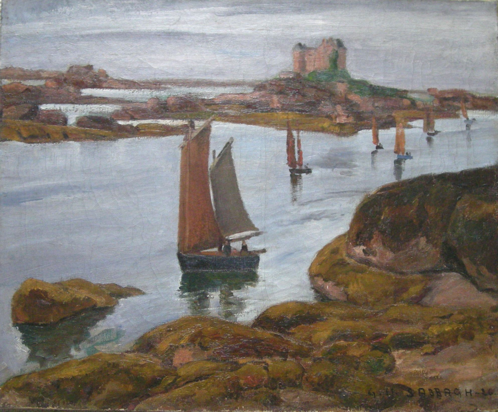

Georges Sabbagh
1877–1951
Artist Biography
Georges Sabbagh was born at Alexandria in Egypt but studied art in Paris, being the first Egyptian at the Louvre school. Although attached to the Paris School, Sabbagh always kept his independence and Brittany, where he lived, formed much of his subject matter until trips to Egypt from 1920 reawakened his interest in his country of birth. He later lived in Egypt from 1936-1945. Sabbagh excelled in portraits, nudes and landscapes and was enchanted by the districts of Old Cairo. His breakthrough came with a successful solo exhibition at the Galerie Cheron in Paris in 1917 and after that he had numerous exhibitions across Europe and elsewhere. His work is held by the Museum of Egyptian Modern Art in Cairo and the Mathaf Arab Museum of Modern Art in Doha amongst other institutions.

Untitled, 1926